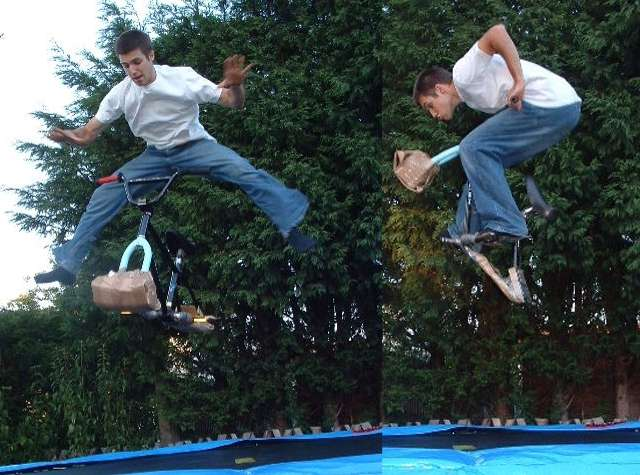
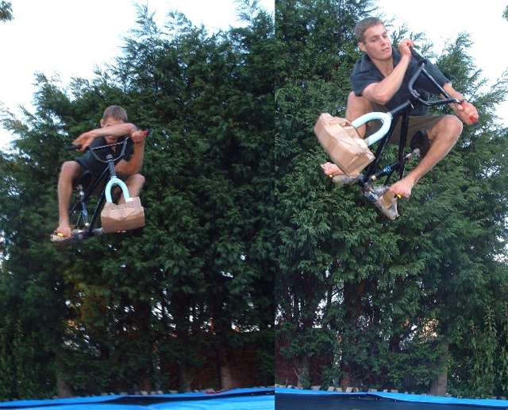
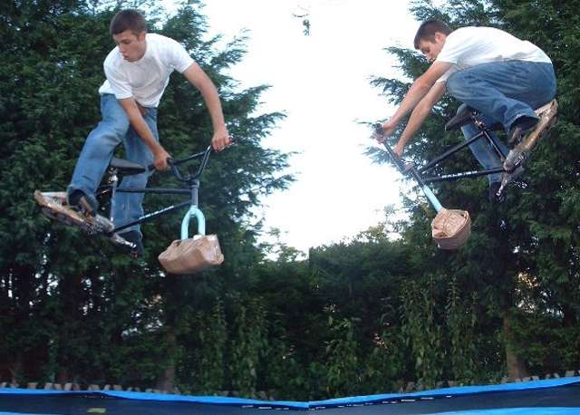
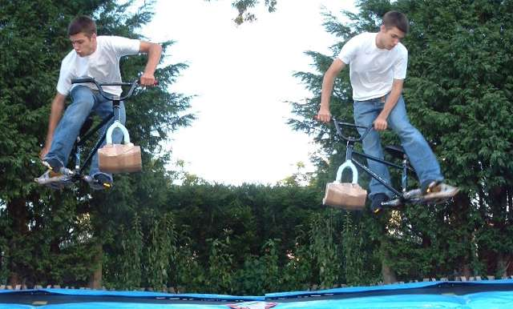
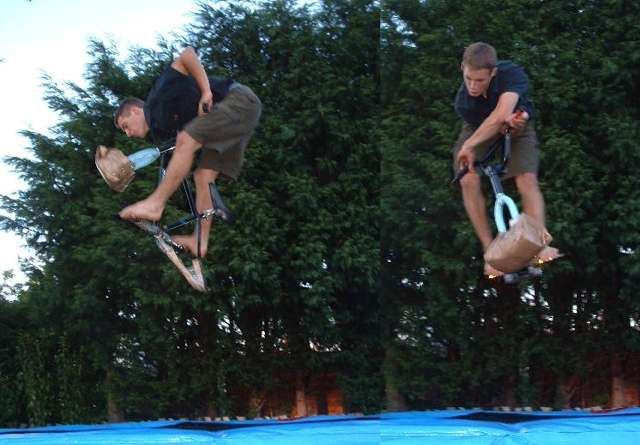
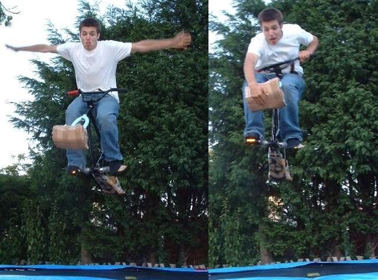

newstuff
messages
pictures
movies
archive
links

a nothing and a pencil. trampolines are just fun to bounce on anyway, without a
bike. but if you strap some cardboard to the pointy bits and knock off the
chainring you have a trampoline bike. i guess it's a bit like having a foam pit,
only you can actually land the tricks you pull.

x-up boost and a weird table. the trampoline is good fun now, but i think it
will be even better in the winter, when the trails are too wet to ride.

kickout and tuck. some tricks are still hard. tables are hard to pull anyway,
and the saddle gets in the way a bit as the frame is off a kids bike, so it's
very short indeed. nac nacs are also very hard as the pedals have no grip, and
the bike just goes into a tailwhip. they are hard too. also on the list of hard
tricks is a no-foot can can. very hard.

tail grap and turndown attempt. on the other hand some tricks, which aren't that
much fun on a bike, like a tail grab what is that about? it's fun tho.

pencil and over x-up. the easiest tricks i think are limb tricks, no footers, no
handers, suicides, nothings and stuff all come quite easily, but a turndown? i
don't even know what to do, so that makes it hard.

no hander and front end grab. still lots more fun to be had.